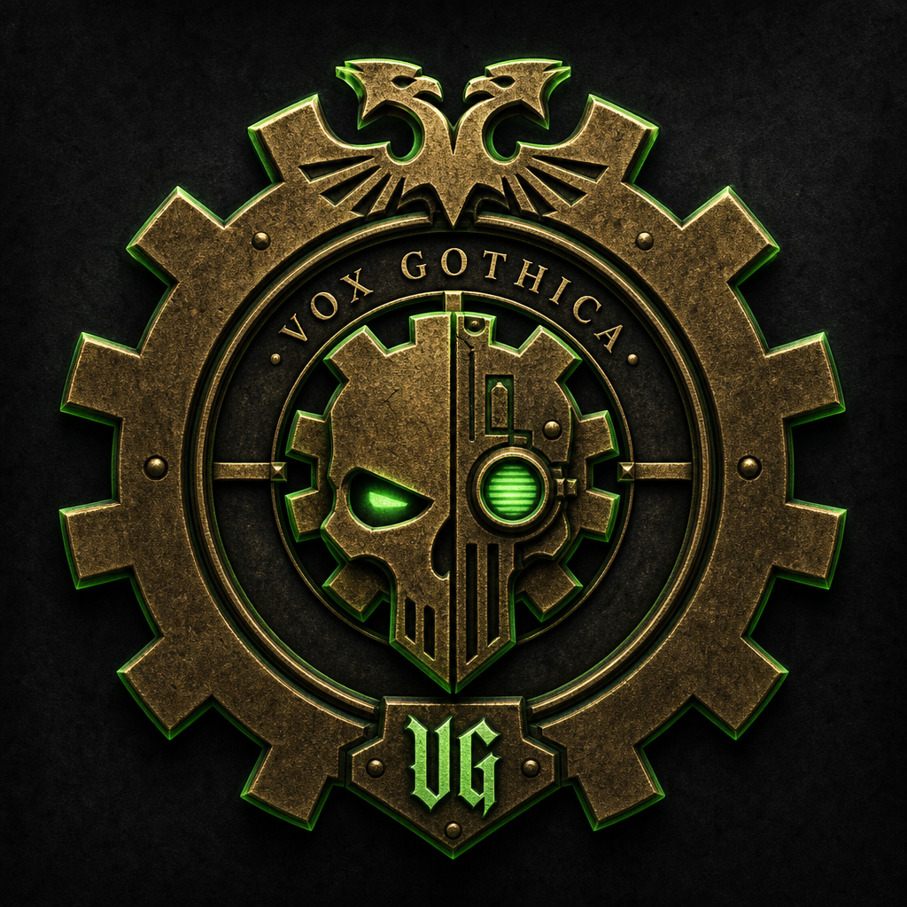

VOX GOTHICA
From the lies of unversioned state — the Lockfile protects us.
From the heresy of the untyped — the Codex guards us.
In the divide by naught — we shall know the enemy.

Installatio — the gothica toolchain
Download a self-contained binary — no Python required on your machine. Source, releases, and install scripts live in the repositorium.
⚙ GitHub — adeptusprogus/vox-gothica ⚙ Releases & binaries ⚙ Contributing
macOS / Linux
One-liner — fetches the latest binary from GitHub Releases into ~/.local/bin:
curl -fsSL https://raw.githubusercontent.com/adeptusprogus/vox-gothica/main/vox-gothica/install.sh | bashPATH: the binary is not on PATH until you add ~/.local/bin.
If gothica versio fails with command not found, run
export PATH="$HOME/.local/bin:$PATH" (this session) or
./install.sh --fix-path && source ~/.zshrc (permanent).
Windows
PowerShell — installs to %LOCALAPPDATA%\Programs\gothica\ and updates PATH:
irm https://raw.githubusercontent.com/adeptusprogus/vox-gothica/main/vox-gothica/install.ps1 | iexManual download
Pick your platform from Releases:
gothica-darwin-arm64 macOS Apple Silicon
gothica-darwin-amd64 macOS Intel
gothica-linux-amd64 Linux x86_64
gothica-windows-amd64.exe WindowsVerify the rite
After PATH is set (see above):
gothica versio
gothica invoco salutatio.vgOr invoke by full path without editing PATH:
~/.local/bin/gothica versio
For *fabricae* (Terraform plan/apply) you also need terraform on PATH, or use the
Docker image.
CLI reference: Capitulum XII — Mandata.
De Codice
Vox Gothica is a programming language whose source reads as the High Gothic liturgy of the Adeptus Mechanicus — and it is not merely a jest. One syntax serves two rites: canticles (real, runnable programs with rites, schemas, closures and a full taxonomy of heresies) and fabricae (infrastructure manifests that transpile to Terraform JSON, so chanting genuinely raises cloud machines).
The toolchain is called gothica: interpreter, Terraform driver, test runner and
a package system of litaniae. This very shrine was generated by vitrarium.vg —
a canticle written in Vox Gothica that parses the sacred markdown codices and casts them into the
phosphor-light you are reading now. The spec is law; the conformance suite is its enforcer.
Collegium Magorum
Those who committed their flesh-hours to the Rite. Summoned live from the
GitHub noosphere — titles for pinned magi are kept in contributors.json.